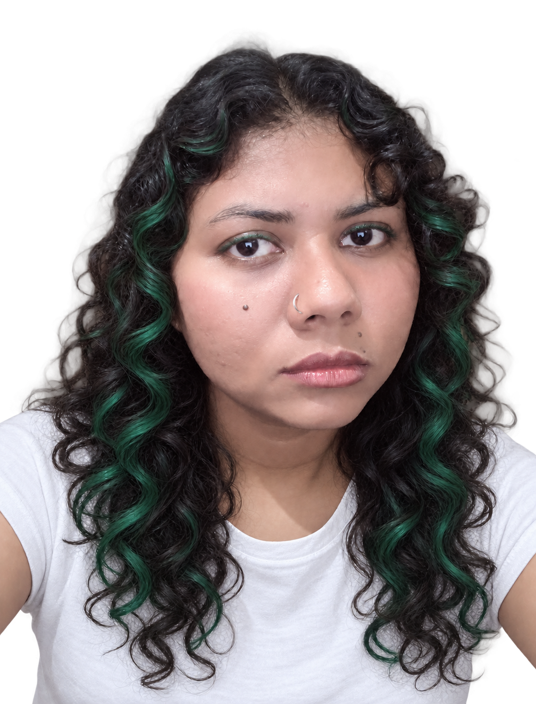

Independent researcher · AI safety, security & alignment · Dhaka, Bangladesh
Adrita Rahman Tory

hi, I'm AdritaI research and build tools to make AI systems safer: resilient against attacks, auditable by design, and aligned with human intention.
Outside research, I write essays and poetry exploring ethics, power, and human responsibility, the questions that keep me up at night.
Let's collaborate & build together
- 01 /
Research Mentorship
Turning vague ideas into rigorous, answerable research questions and executable plans.
see how → - 02 /
Research Collaborations
Designing, executing, and transparently evaluating experiments across AI safety and security.
see how → - 03 /
AI Safety & Alignment
Navigating core threat models, agent behavior, and entry paths into technical AI safety research.
see how → - 04 /
Technical & Prototyping Work
Building evaluation pipelines, security benchmarks, and working code for AI systems.
see how → - 05 /
Academic Writing & Submissions
Structuring manuscripts, figures, target venue selection, and reviewer response strategies.
see how → - 06 /
Career & Pathway Guidance
Navigating applications, research statements, and transitions into cybersecurity or AI safety fields.
see how → - 07 /
Beyond the Lab
Exploring ethics, power, and human responsibility through essays and poetry. Always up for deep conversations on the philosophical side of AI and humanity.
see how → - Not sure where to start?
Book a call and tell me what you’re working on
Pick a time that suits you. We’ll figure out together which of these fits.
book a call ↗
Research
Intrusion detection
Network IDS datasets and how well they cover real threats (MITRE ATT&CK).
Adversarial ML
Adversarial detection and robustness of AI-based threat detectors.
Federated learning
Privacy-preserving training with differential privacy, and its trade-offs.
LLM & agent security
Prompt injection, AI threat modelling, and covert collusion between AI agents.
Papers
click any paper to read the summary, open the PDF, or copy a citationProjects
Ongoing work
Collusion Evidence Lab · started in an Apart Research sprint, Oct 2026
Tested simple ways to spot AI agents secretly coordinating prices, using only their logs. No single check worked everywhere, but combining them cut false alarms from 34% to 4%. It still misses cartels that never react to rivals. I am still extending it. Includes a free browser tool so a human reviewer makes the final call.
Agent Control Threat Coverage Matrix · ACTCM · independent project
AI-control tests give an agent a hidden harmful goal and score how suspicious it looks to a monitor, but that safety number only covers the attacks the test includes. This project labels every test attack with a MITRE ATT&CK tactic, counts per tactic, and finds the empty ones, so missing attack types stop making a monitor look safer than it is. Open source soon.
Tools you can try
IDS/IPS Dataset Scoring Tool · 2026
Turns my Computers & Security paper into a free browser tool: pick an industry, and it scores 10 well-known intrusion-detection datasets, or your own, on how well they cover that industry's real threats.
Collusion Evidence Lab above also runs in your browser.
Mentee reviews
4 reviews · 5.0 average · shown as writtenOngoing & recent news
- Oct 2026Built Collusion Evidence Lab in an Apart Research sprint: tools to spot AI agents secretly coordinating prices from their logs.
- Oct 2026Completed the Technical AI Safety course, BlueDot Impact.
- 2026Awarded the Erasmus Mundus CyberMACS Scholarship.
- 2026Submitted my master's thesis. Joined the Centre for Effective Altruism's Career Bootcamp.
- 2026Three papers accepted: IEEE CSDE 2026, IEEE iCOSTE 2026 and IEEE ICCIT 2026.
- 2026Four papers presented at ML4CS 2026: one as first author, three with students I mentor and colleagues.
- 2025Two journal articles published: Computers & Security and Education Sciences (MDPI).
- 2025Papers presented at ICBDIML 2025 and ISSOTL 2025. Peer reviewer for COMPAS 2025.
- Aug 2025Started a Professional Master's in IT at Jahangirnagar University.
- 2025Earned CompTIA Security+. Completed my B.Sc. in CSE at BUBT (Mar 2025).
Research roles
University Research Assistant
Bangladesh University of Business & Technology
- Research on AI-based cyber threat detection and adversarial AI, including experimental evaluations.
- Contributed to papers: figures, summarising findings, writing and documentation.
- Built research capacity in cybersecurity through workshops and one-on-one mentoring.
Research Assistant
Cyber Research Hub, BUBT
- Supported research on privacy-preserving 6G infrastructure, federated learning, and explainable, trustworthy AI in cybersecurity; ran evaluations and helped build prototypes.
- Kept research activities in line with privacy, governance and policy requirements across Australian and global contexts.
- Mentored undergraduate researchers on methods, experiments and writing, several of whom have now published their first papers.
earlier work
Software Engineer (part-time)
Sun Co. Ltd., Dhaka
Intern, Software Engineering
Sun Co. Ltd., Dhaka
RPL/RTO Trainer
Bangladesh Technical Education Board, Dhaka
Guest Trainer, IT & Web Development
Ideal Institute of Technology, Rishda Bangladesh, Kaizen IT Ltd, Technical Teachers' Training College, New Trizon IT
Course-based training in IT operations, web development and graphic design across five institutes.
Essays & reflections
On ethics, power, poetry and being a person.
The Bengali New Year: Pahela Boisakh (শুভ নববর্ষ)↗ Reflection
Reflections on Being↗ Ethics
To Be a Fake Person or Not to Be a Fake Person: The Ethics of Feeling and Doing↗ Power
Why Good People Choose Power Over Wisdom↗ Writing
So You Asked What's About Poetry and Writing↗ Reflection
The Extinction↗
Technical notes
Things I wrote up while learning. Some are in Bengali.
Let's talk
open to research collaborations, mentoring and good conversations.
Tell me what you're working on, or where you're stuck, and we'll work out the next step together.
Book a call with me ↗find me elsewhere
Based in Dhaka, Bangladesh